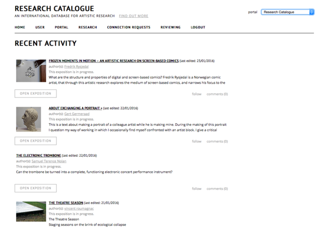
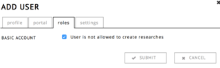
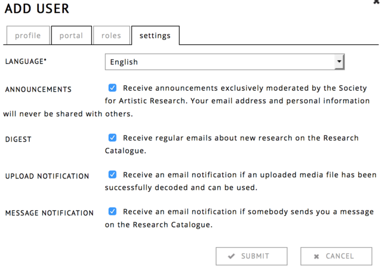
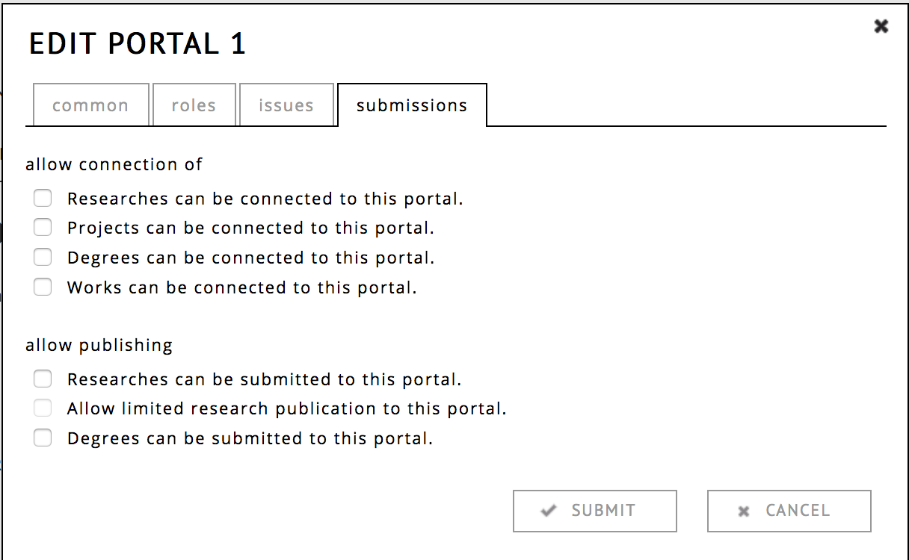

pandoc -s -f markdown_github -i admin.md -o admin.html -c style.css
To reach the administration functionalities of the RC website, click on administration, located in the top right corner. To return to your own profile, you can click on the Research Catalogue logo.

There are 5 pages to manage content for portal admins:
User
Adding, removing and editing user information to this portal
Portal
Portal settings, reviewers, sending portal mails
Research
Management of connected expositions
Connection Requests
Management of connection requests
Reviewing
Review process of expositions and objects that are waiting to be published
If you are an admin in multiple portals, you can switch between them in the top right corner of the site, through the drop down menu.
| Action | Icon |
|---|---|
| Add a user |  |
| Edit a user |  |
| Remove a user |  |
| Login as a user |  |

Change the name, alias, email and password (optional).
An administrator can also change these fields without having to change the password (by leaving the field empty).

This controls to which portals a user is added. A user can be added to multiple portals at once. Portals which are selected are marked by a gray background.

When the option is turned on, the user cannot create any content. The can still become supervisors or read expositions.

Here you can set which emails the user should receive.
While logged in as another user, you will see a red bar on the top of your window that shows who you are and enables you to switch back to your own account. This feature is useful while helping somebody with issues specific to their account.
Keep in mind: you become this user in all the tabs of your browser window, so you would temporarly loose some of you admin permissions while navigating as this user.
The portal tab shows you which users are administrators on the portal.
It has 3 actions:
| Action | Icon |
|---|---|
| Portal mail |  |
| Edit portal settings | |
| Delete a portal | |

For advanced layout, you can use the HTML button. Please note that it is not recommended to use URI encoded images in email, since some email clients do not like this. Better practice is to have the images hosted somewhere externally and link form there using a

Here you can edit the basic information of the portal.
View text allows you to change the template that is used to display expositions on the portal page:
available placeholders: $author, $title, $portal, $edition, $published, $url, $now.

Here you can edit the various roles of the portal:

Here you can set the title of the issues (as in journal issues), one can use these in Reviewing.

Here you can set which objects can be submitted to the portal.
Here you can manage all research connected to the portal. Expositions are sorted per issue. Those without a publishing date, have not been published yet. There are a number of actions available:
| Action | Icon |
|---|---|
| Edit | |
| Unpublish | |
| Comment | |
| Block |
The unpublishing of expositions is not encuraged. Published expositions are supposed to be a permament reference, never to be deleted or changed. If an exposition is to be continuously changed or temporary, it is better to not publish, but simply set its sharing settings to public. When unpublishing an exposition make sure with the author of the exposition that there are no connected works that have been deleted since, otherwise it may be impossible to reconstruct the publication.
It is possible for users to connect a work or exposition to a portal. The works that have been accepted by an admin of the protal will be listed here.